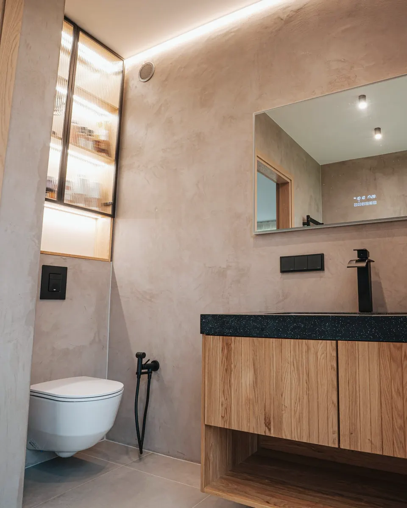
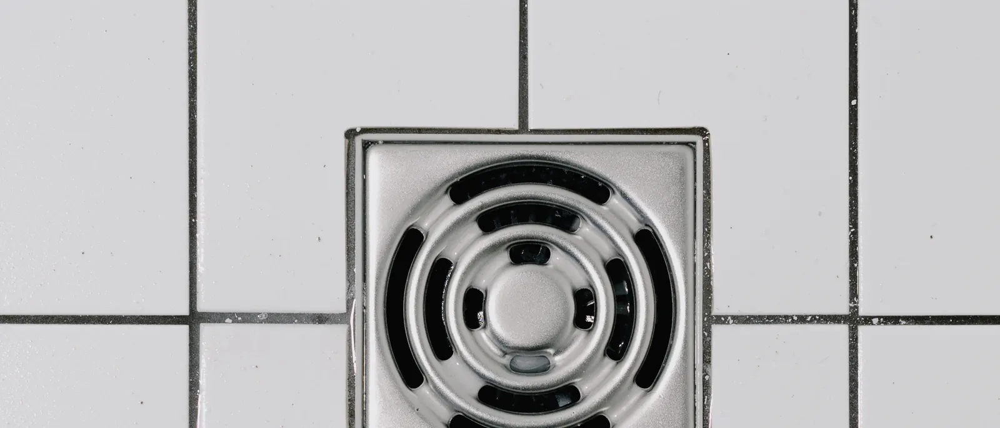
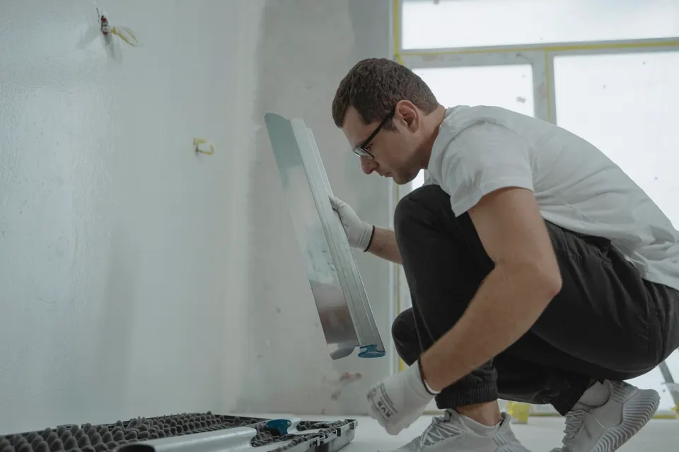
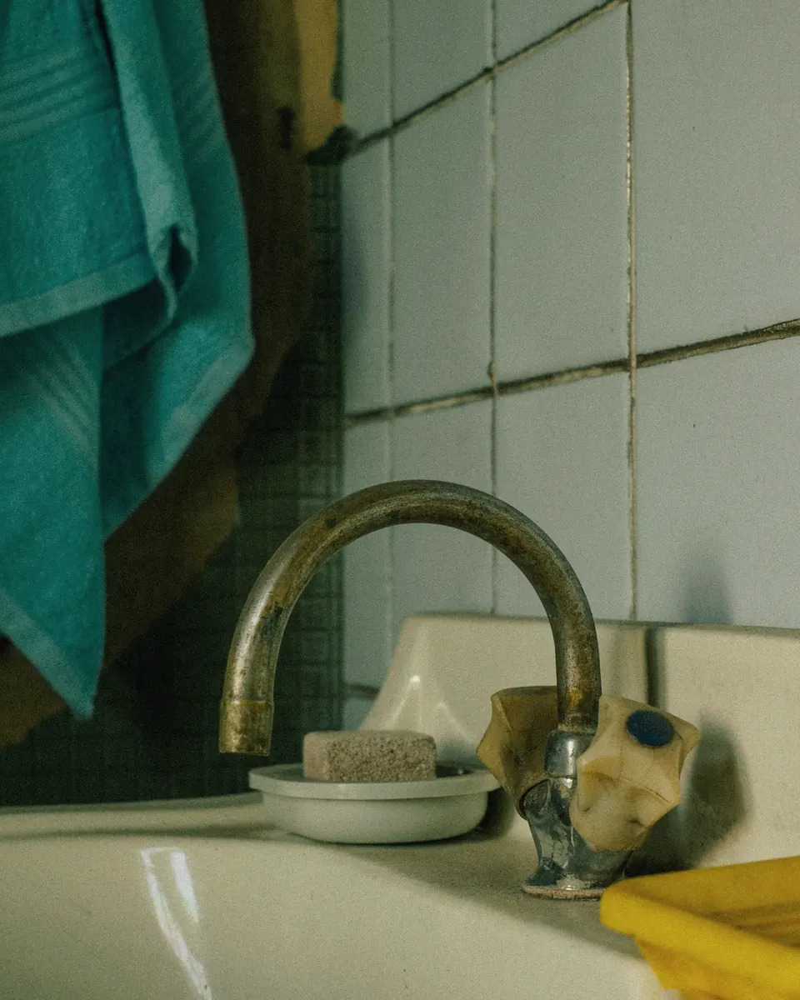
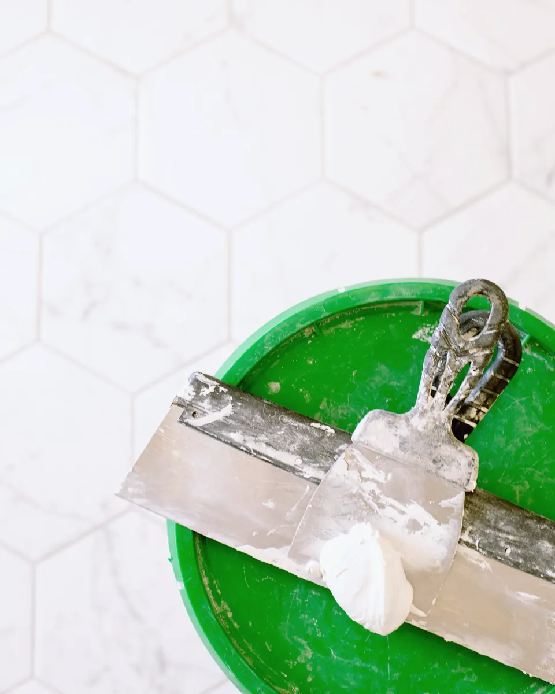
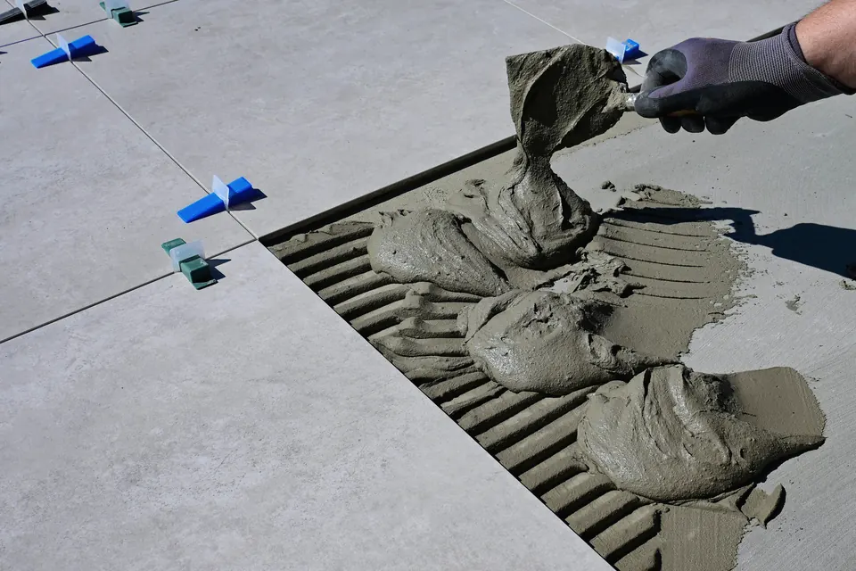
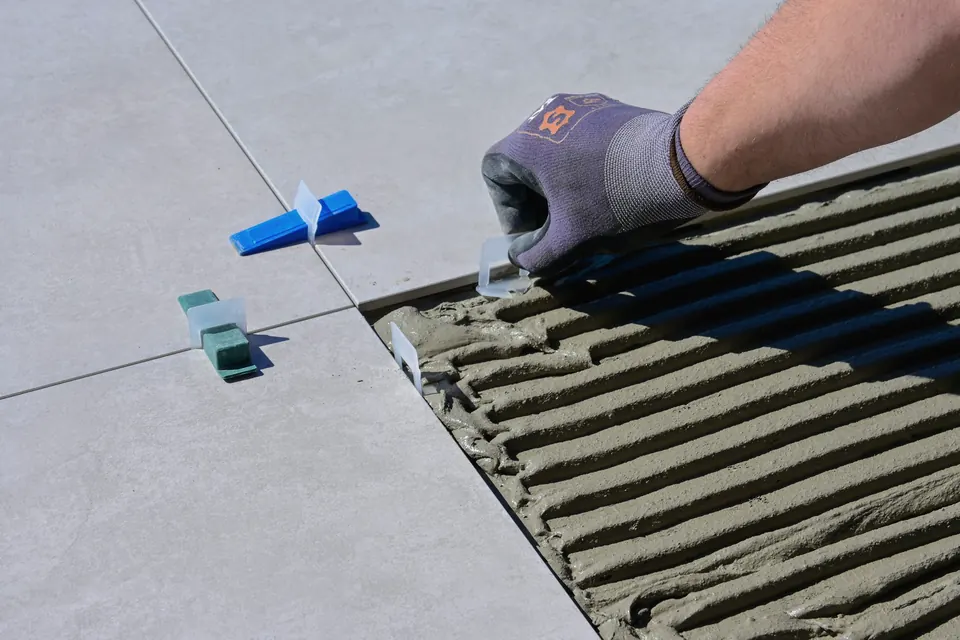
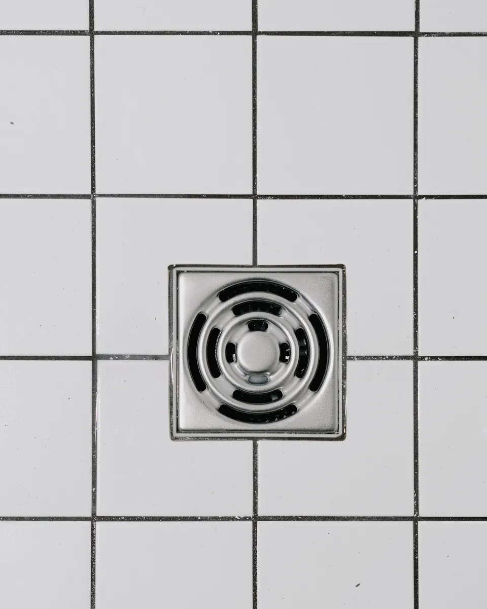

Vesi menee sinne, minne pitää.
Teemme vain kylpyhuoneita ja saunoja pääkaupunkiseudun kerros-, rivi- ja omakotitaloihin. Sama vedeneristäjä on työmaalla alusta loppuun, ja jokainen kerros kuvataan.
- Hinta
- Kiinteä, ennen aloitusta
- Työmaalla
- Kolme viikkoa
- Vedeneristys
- 10 vuoden takuu
- Ennakkomaksu
- Ei ole


Ø 110 · kallistus 1:80Kaikki alkaa kaivosta.
Kaivon paikka päätetään ensin. Lattia kallistetaan sitä kohti ja laatat ladotaan siitä alkaen. Siksi kylpyhuoneissamme ei jää vettä nurkkiin.

Tärkein osa jää laattojen alle.
Kylpyhuone näyttää valmiina samalta, tehtiinpä vedeneristys hyvin tai huonosti. Siksi kuvaamme sen. Saat kuivakansion, jossa on kuvat jokaisesta kerroksesta, mitatut kalvopaksuudet ja tuotteiden tiedot.
- 1:80Kallistus kaivolle koko suihkualueella, mitattu vatupassilla ja laserilla
- 0,5 mmVedeneristeen kuivakalvo vähintään, mitattu kerroksittain
- 24 hKuivumisaika kerrosten välillä, ei vähemmän
- 10 vTakuu vedeneristykselle, koska jokainen vaihe on dokumentoitu





Otteita Nuuksion kohteen kuivakansiosta. Kansiossa on yhteensä 46 kuvaa.
Hinta, ennen kuin tulemme käymään.
Useimmat kylpyhuoneet osuvat näihin haarukoihin. Mittauskäynnin jälkeen saat kiinteän hinnan, joka ei muutu, ellei purussa löydy jotain, mitä emme voineet nähdä.
| Tila | Alkaen | Enintään yleensä | Alkaen, kun kaksi omistajaa käyttää vähennyksen |
|---|---|---|---|
| Kerrostalon kylpyhuone1950–80-luvun talot, 3–5 m² | 16 900 € | 23 900 € | noin 13 900 € |
| Rivi- tai omakotitalon kylpyhuone5–8 m², myös kaksi kaivoa | 21 500 € | 29 800 € | noin 18 500 € |
| Kylpyhuone ja sauna7–12 m², lauteet ja kiuas mukana | 29 900 € | 41 500 € | noin 26 700 € |
| Erillinen wc1,2–2,5 m² | 7 900 € | 9 800 € | noin 6 500 € |
Hinnat sisältävät alv:n 25,5 %, purun ja jätteet, asbestikartoituksen, LVI- ja sähkötyöt, vedeneristyksen, laatat hintaluokassa 40–60 €/m², kalusteet ja siivouksen. Hinnat päivitetty 1.10.2026.
Kolme viikkoa työmaalla.
Valmistelu kestää 4–8 viikkoa: mittaus, tarjous, taloyhtiön käsittely ja tilaukset. Kun aloitamme, työmaa etenee tällä rytmillä.
- 1
- 2
- 3
- 4
- 5
- 6
- 7
- 8
- 9
- 10
- 11
- 12
- 13
- 14
- 15
- Päivät 1–3
Suojaus ja purku
Suojaamme rappukäytävän ja oven. Purku tehdään pölynpoistolla, ja asbestikartoitus on tehty jo ennen ensimmäistä päivää.
- Päivä 4
Putket ja sähköt
Uudet vesi- ja viemäriputket, lattiakaivo ja sähköt. Samat LVI- ja sähköasentajat joka kohteessa.
- Päivät 5–6
Kallistusvalu kuivuu
Lattiaan valetaan kallistus kaivolle. Mittaamme kosteuden ennen kuin jatkamme. Kuivumista ei kiirehditä.
- Päivät 7–8
Vedeneristys
Kaksi kerrosta, kuvat jokaisesta nurkasta ja läpiviennistä. Isännöitsijän valvoja tarkastaa ennen laatoitusta.
- Päivät 9–13
Laatoitus ja saumaus
Laatat ladotaan kaivon mukaan, ei kaivoa laattojen mukaan. Lattian kallistus mitataan vielä kerran.
- Päivät 14–15
Kalusteet ja luovutus
Kalusteet, kytkennät, painekoe ja siivous. Käymme kylpyhuoneen läpi kanssasi ja annamme kuivakansion.
Taloyhtiön paperit kuuluvat meille.
Muutostyöilmoitus
Kirjoitamme ilmoituksen piirustuksineen ja toimitamme sen isännöitsijälle. Hallitus vastaa yleensä kahdessa viikossa. Taloyhtiön valvoja saa vedeneristyksen tarkastuspäivän heti, kun se on sovittu.
- Muutostyöilmoitus ja suunnitelma
- Ilmoitus naapureille kaksi viikkoa ennen purkua
- Valvojan tarkastus ennen laatoitusta
Asbesti ja vanhat talot
Ennen vuotta 1994 rakennetuissa taloissa asbestikartoitus on tehtävä ennen purkua. Tilaamme kartoituksen ulkopuoliselta kartoittajalta, ja se sisältyy hintaan. Jos asbestia löytyy, purku tehdään asbestipurkuna ja hinta kerrotaan ennen aloitusta.
- Kartoitusraportti ennen ensimmäistä työpäivää
- Kosteusmittaus purun jälkeen
- Jätteet lajitellaan ja viedään pois
Samat ihmiset alusta loppuun.
Emme käytä vaihtuvia aliurakoitsijoita märkätöissä. Tiedät jo tarjousvaiheessa, kuka kylpyhuoneesi tekee.
- Joonas Vähämaa
Perustaja ja vedeneristäjä. Teki kylpyhuoneita viisi vuotta ennen kuin perusti Kallistuksen 2011. Märkätilojen vedeneristäjän sertifikaatti.
- Minna Hiltunen
Projektipäällikkö. Hoitaa taloyhtiöt, aikataulut ja tilaukset, ja vastaa puhelimeen.
- Aki Laaksonen
Laatoittaja. Ladoo laatat kaivolta alkaen ja mittaa kallistuksen ennen saumausta.
Kysytään usein.
Saako kylpyhuonetta käyttää remontin aikana?
Ei. Kerrostalossa varaamme kanssasi suihkumahdollisuuden läheltä, esimerkiksi taloyhtiön saunalta, tai järjestämme sen kuntosalilta kolmeksi viikoksi. Wc toimii yleensä päivät 1–3 ja 14–15.
Mitä jos purussa löytyy kosteusvaurio?
Kerromme siitä samana päivänä, näytämme kuvat ja mittaustulokset ja teemme kirjallisen lisätyötarjouksen. Mitään ylimääräistä ei tehdä ilman hyväksyntääsi.
Kuka hoitaa taloyhtiön paperit?
Me. Kirjoitamme muutostyöilmoituksen piirustuksineen ja toimitamme sen isännöitsijälle. Taloyhtiön valvoja saa aikataulun ja tarkastuspäivän heti, kun ne on sovittu.
Pitääkö maksaa etukäteen?
Ei. Laskutamme kahdessa osassa: 30 % kun vedeneristys on tarkastettu ja 70 % luovutuksen jälkeen. Laskussa työ ja tarvikkeet ovat eriteltyinä kotitalousvähennystä varten.
Voinko valita laatat itse?
Voit. Hintaan sisältyy laatta 40–60 €/m², ja kalliimmasta maksat vain erotuksen. Mittauskäynnillä tuomme näytteet kolmesta mallistosta, ja voit käydä katsomassa niitä myös varastollamme Roihupellossa.
Mikä takuu on?
Kahden vuoden takuu työlle ja kymmenen vuoden takuu vedeneristykselle. Kymmenen vuoden takuu perustuu kuivakansioon: jokainen kerros on kuvattu ja mitattu, joten voimme seistä sen takana.
Pyydä mittauskäynti.
Käynti kestää noin 45 minuuttia eikä maksa mitään. Kiinteän hinnan saat kolmen arkipäivän sisällä.
- 1Minna soittaa samana tai seuraavana arkipäivänä.
- 2Joonas mittaa kylpyhuoneen ja tuo laattanäytteet.
- 3Saat tarjouksen, aikataulun ja muutostyöilmoituksen luonnoksen.
Tai soita: 048 562 0821